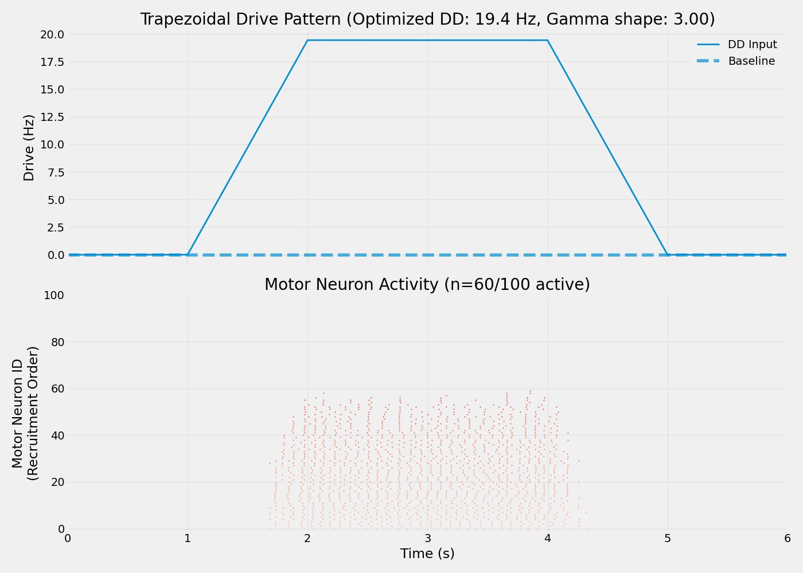
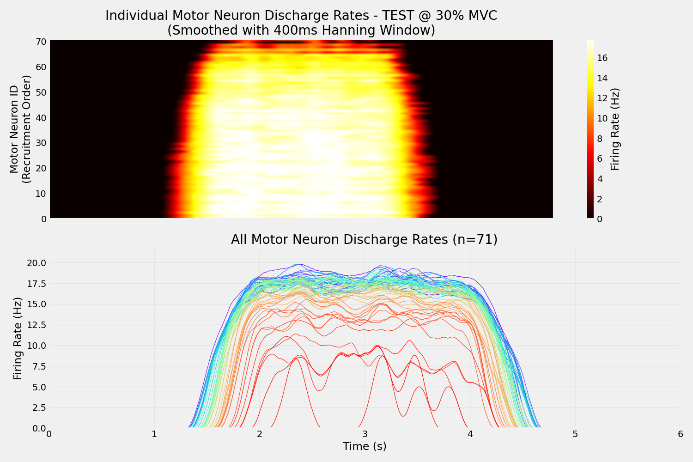

Note
Go to the end to download the full example code.
ISI and CV Analysis with Optimized Descending Drive#
This example demonstrates spike train analysis using optimized descending drive parameters from previous optimization studies. It extracts inter-spike interval (ISI) and coefficient of variation (CV) statistics during realistic trapezoidal contraction patterns.
Note
Analysis workflow:
Load optimized DD parameters from baseline or force-specific optimization
Generate trapezoidal drive pattern (ramp-up, plateau, ramp-down)
Simulate motor neuron spike trains with optimized network
Extract ISI/CV statistics during plateau phase
Visualize firing patterns and instantaneous discharge rates
Important
Prerequisites: This example requires results from previous optimizations:
Baseline mode: Run
00_optimize_dd_for_target_firing_rate.pyfirstForce mode: Run
02_optimize_dd_for_target_force.pyfor specific MVC levelLoads network structure and drive parameters from saved results
Trapezoidal Contraction: Simulates realistic voluntary isometric contractions with:
Ramp-up phase: Linear increase from rest to target force (1 second)
Plateau phase: Sustained contraction at target level (2 seconds)
Ramp-down phase: Linear decrease back to rest (1 second)
Rest periods: Baseline activity before and after contraction (1 second each)
ISI/CV Metrics: Quantify firing variability and regularity for motor control studies.
Import Libraries#
import os
os.environ["MPLBACKEND"] = "Agg"
if "DISPLAY" in os.environ:
del os.environ["DISPLAY"]
import itertools
import json
import warnings
from pathlib import Path
import elephant
import joblib
import numpy as np
import quantities as pq
from matplotlib import pyplot as plt
from neo import AnalogSignal, Block, Segment, SpikeTrain
from neuron import h
from tqdm import tqdm
from myogen import set_random_seed
from myogen.simulator import RecruitmentThresholds
from myogen.simulator.neuron import Network
from myogen.simulator.neuron.populations import AlphaMN__Pool, DescendingDrive__Pool
from myogen.utils.helper import calculate_firing_rate_statistics
from myogen.utils.nmodl import load_nmodl_mechanisms
warnings.filterwarnings("ignore")
plt.style.use("fivethirtyeight")
Configuration#
Set analysis parameters and specify which optimization results to load.
# Random seed for reproducibility
set_random_seed(42)
# Study parameters
MUSCLE_TYPE = "TEST" # Muscle identifier
MVC_LEVEL = 30 # MVC percentage (used for file naming)
STUDY_PREFIX = "TEST_" # Prefix for output files
# Optimization mode selection
USE_BASELINE_OPTIMIZATION = True # True = baseline FR optimization, False = force optimization
TARGET_FORCE_PCT = 30 # Force level if using force optimization
# Simulation parameters
TIMESTEP__ms = 0.1
N_MOTOR_UNITS = 100
# Trapezoidal contraction timing
RAMP_UP_DURATION__ms = 1000 # 1 second ramp-up
PLATEAU_DURATION__ms = 2000 # 2 second plateau
RAMP_DOWN_DURATION__ms = 1000 # 1 second ramp-down
REST_BEFORE__ms = 1000 # 1 second rest before
REST_AFTER__ms = 1000 # 1 second rest after
# Directories - use project root to share across examples
# Handle both manual execution and Sphinx Gallery (where __file__ is not defined)
try:
_script_dir = Path(__file__).parent
except NameError:
_script_dir = Path.cwd()
RESULTS_DIR = _script_dir.parent.parent / "results"
RESULTS_DIR.mkdir(exist_ok=True, parents=True)
Random seed set to 42.
Load Optimized DD Parameters#
Load network parameters from previous optimization studies.
print(f"\n{'=' * 80}")
print("LOADING OPTIMIZED DD PARAMETERS")
print(f"{'=' * 80}\n")
if USE_BASELINE_OPTIMIZATION:
# Load from baseline firing rate optimization
OPTIMIZATION_RESULTS_DIR = _script_dir.parent.parent / "results" / "dd_optimization"
PARAMS_FILE = OPTIMIZATION_RESULTS_DIR / "dd_optimized_params.json" # No prefix for baseline
print("Loading from BASELINE firing rate optimization...")
# Fallback to static example data if dynamic results don't exist
STATIC_DATA_DIR = _script_dir.parent / "data" / "dd_optimization"
STATIC_PARAMS_FILE = STATIC_DATA_DIR / "dd_optimized_params.json"
if PARAMS_FILE.exists():
print(f" ✓ Using dynamic results from: {PARAMS_FILE.relative_to(_script_dir.parent.parent)}")
elif STATIC_PARAMS_FILE.exists():
print(f" ✓ Using static example data from: {STATIC_PARAMS_FILE.relative_to(_script_dir.parent.parent)}")
PARAMS_FILE = STATIC_PARAMS_FILE
else:
raise FileNotFoundError(
f"Baseline optimization results not found.\n"
f" Tried: {PARAMS_FILE}\n"
f" Tried: {STATIC_PARAMS_FILE}\n"
"Please run optimize_dd_for_target_firing_rate.py first or check examples/data/"
)
with open(PARAMS_FILE, "r") as f:
optimization_results = json.load(f)
# Extract DD parameters from best firing rate match
dd_params = optimization_results["best_trial"]
source_description = "baseline FR optimization"
else:
# Load from force-specific optimization
OPTIMIZATION_RESULTS_DIR = _script_dir.parent.parent / "results" / "force_optimization"
# List available force optimization files
if OPTIMIZATION_RESULTS_DIR.exists():
available_files = sorted(
OPTIMIZATION_RESULTS_DIR.glob(f"{STUDY_PREFIX}dd_optimized_params_force_*pct.json")
)
if available_files:
print("Available force optimization results:")
for i, file in enumerate(available_files):
# Extract percentage from filename
pct = file.stem.split("_")[-1].replace("pct", "")
print(f" {i + 1}. {pct}% MVC - {file.name}")
print()
PARAMS_FILE = (
OPTIMIZATION_RESULTS_DIR
/ f"{STUDY_PREFIX}dd_optimized_params_force_{int(TARGET_FORCE_PCT)}pct.json"
)
print(f"Loading from FORCE-SPECIFIC optimization ({TARGET_FORCE_PCT}% MVC)...")
if not PARAMS_FILE.exists():
raise FileNotFoundError(
f"Force optimization results not found at {PARAMS_FILE}.\n"
f"Please run: python optimize_dd_for_target_force.py --target-force-pct {TARGET_FORCE_PCT}"
)
with open(PARAMS_FILE, "r") as f:
optimization_results = json.load(f)
# Extract DD parameters from force optimization results
dd_params = optimization_results["dd_parameters"]
source_description = f"{TARGET_FORCE_PCT}% MVC force optimization"
# Extract common DD parameters
N_DD_NEURONS = dd_params["dd_neurons"]
DD_CONNECTION_PROBABILITY = dd_params["conn_probability"]
DD_PEAK__Hz = dd_params["dd_drive__Hz"]
DD_SHAPE_PARAMETER = dd_params["gamma_shape"]
DD_SYNAPTIC_WEIGHT = dd_params.get("synaptic_weight", 0.05)
# Load Gfluctdv settings if present
GFLUCTDV_ENABLED = optimization_results.get("gfluctdv_enabled", False)
GFLUCTDV_NOISE_AMPLITUDE = dd_params.get("gfluctdv_noise_amplitude", None)
print(f"\n(OK) Loaded from: {source_description}")
print(f" Source file: {PARAMS_FILE.name}")
print("\nOptimized DD parameters:")
print(f"\tDD neurons: {N_DD_NEURONS}")
print(f"\tConn probability: {DD_CONNECTION_PROBABILITY:.3f}")
print(f"\tSynaptic weight: {DD_SYNAPTIC_WEIGHT:.4f} uS")
print(f"\tDD drive level: {DD_PEAK__Hz:.2f} Hz")
print(f"\tGamma shape: {DD_SHAPE_PARAMETER:.2f} (CV={1 / DD_SHAPE_PARAMETER**0.5:.3f})")
if GFLUCTDV_ENABLED:
print(f"\tGfluctdv: ENABLED (noise={GFLUCTDV_NOISE_AMPLITUDE:.2e} S/cm²)")
================================================================================
LOADING OPTIMIZED DD PARAMETERS
================================================================================
Loading from BASELINE firing rate optimization...
✓ Using dynamic results from: results/dd_optimization/dd_optimized_params.json
(OK) Loaded from: baseline FR optimization
Source file: dd_optimized_params.json
Optimized DD parameters:
DD neurons: 101
Conn probability: 0.930
Synaptic weight: 0.0500 uS
DD drive level: 283.98 Hz
Gamma shape: 3.00 (CV=0.577)
Initialize NEURON and Create Motor Neuron Pool#
Setup NEURON simulator and create the motor neuron population.
load_nmodl_mechanisms()
h.secondorder = 2 # Crank-Nicolson integration
recruitment_thresholds, _ = RecruitmentThresholds(
N=N_MOTOR_UNITS,
recruitment_range__ratio=100,
deluca__slope=5,
konstantin__max_threshold__ratio=1.0,
mode="combined",
)
motor_neuron_pool = AlphaMN__Pool(
recruitment_thresholds__array=recruitment_thresholds,
config_file="alpha_mn_default.yaml",
)
# Apply Gfluctdv if it was enabled during optimization
if GFLUCTDV_ENABLED and GFLUCTDV_NOISE_AMPLITUDE is not None:
print("\nApplying Gfluctdv to motor neurons (matching DD optimization)...")
print(f"\tNoise amplitude: {GFLUCTDV_NOISE_AMPLITUDE:.2e} S/cm²")
for cell in motor_neuron_pool:
cell.insert_Gfluctdv()
for d in cell.dend:
d.std_e_Gfluctdv = GFLUCTDV_NOISE_AMPLITUDE
d.std_i_Gfluctdv = GFLUCTDV_NOISE_AMPLITUDE
else:
print("\nGfluctdv NOT enabled (following DD optimization settings)")
# Create descending drive pool with optimized parameters
descending_drive_pool = DescendingDrive__Pool(
n=N_DD_NEURONS,
timestep__ms=TIMESTEP__ms * pq.ms,
process_type="gamma",
shape=DD_SHAPE_PARAMETER,
)
Gfluctdv NOT enabled (following DD optimization settings)
Generate Trapezoidal Drive Pattern#
Create a trapezoidal ramp contraction pattern that represents realistic voluntary isometric contractions. This pattern has 4 phases: 1. Ramp-up: Linear increase from baseline to peak 2. Plateau: Sustained peak drive level 3. Ramp-down: Linear decrease from peak to baseline 4. Rest: Baseline activity
This is a common experimental paradigm used in motor control studies.
# Calculate total simulation time
simulation_time = (
REST_BEFORE__ms
+ RAMP_UP_DURATION__ms
+ PLATEAU_DURATION__ms
+ RAMP_DOWN_DURATION__ms
+ REST_AFTER__ms
)
time_points = int(simulation_time / TIMESTEP__ms)
# Drive parameters
dd_baseline__Hz = 0.0 # Baseline drive during rest
dd_peak__Hz = DD_PEAK__Hz # Peak drive from optimization
# Calculate phase boundaries
trapezoid_start = REST_BEFORE__ms
ramp_up_end = trapezoid_start + RAMP_UP_DURATION__ms
plateau_end = ramp_up_end + PLATEAU_DURATION__ms
ramp_down_end = plateau_end + RAMP_DOWN_DURATION__ms
# Create time array
time_array = np.linspace(0, simulation_time, time_points)
# Initialize drive signal (all baseline)
trapezoid_drive = np.ones(time_points) * dd_baseline__Hz
for i, t in enumerate(time_array):
if t < trapezoid_start:
# Phase 0: Rest before
trapezoid_drive[i] = dd_baseline__Hz
elif t < ramp_up_end:
# Phase 1: Ramp up
elapsed = t - trapezoid_start
trapezoid_drive[i] = dd_baseline__Hz + (dd_peak__Hz - dd_baseline__Hz) * (
elapsed / RAMP_UP_DURATION__ms
)
elif t < plateau_end:
# Phase 2: Plateau
trapezoid_drive[i] = dd_peak__Hz
elif t < ramp_down_end:
# Phase 3: Ramp down
elapsed = t - plateau_end
trapezoid_drive[i] = dd_peak__Hz - (dd_peak__Hz - dd_baseline__Hz) * (
elapsed / RAMP_DOWN_DURATION__ms
)
else:
# Phase 4: Rest after
trapezoid_drive[i] = dd_baseline__Hz
# Create AnalogSignal for drive pattern
trapezoid_drive__signal = AnalogSignal(
signal=trapezoid_drive,
units=pq.Hz,
sampling_period=(TIMESTEP__ms * pq.ms).rescale(pq.s),
)
joblib.dump(trapezoid_drive__signal, RESULTS_DIR / f"{STUDY_PREFIX}trapezoid_drive_pattern.pkl")
print(f"\nTrapezoidal drive pattern (using optimized DD drive of {dd_peak__Hz:.2f} Hz):")
print(f"\tRest before: 0 - {trapezoid_start} ms ({dd_baseline__Hz} Hz)")
print(f"\tRamp up: {trapezoid_start} - {ramp_up_end} ms ({dd_baseline__Hz} → {dd_peak__Hz:.2f} Hz)")
print(
f"\tPlateau: {ramp_up_end} - {plateau_end} ms ({dd_peak__Hz:.2f} Hz, center at {(ramp_up_end + plateau_end) / 2:.0f}ms)"
)
print(f"\tRamp down: {plateau_end} - {ramp_down_end} ms ({dd_peak__Hz:.2f} → {dd_baseline__Hz} Hz)")
print(f"\tRest after: {ramp_down_end} - {simulation_time} ms ({dd_baseline__Hz} Hz)")
print("\nUsing optimized DD parameters:")
print(f"\tGamma shape: {DD_SHAPE_PARAMETER:.2f} (CV={1 / DD_SHAPE_PARAMETER**0.5:.3f})")
print(f"\tConnection probability: {DD_CONNECTION_PROBABILITY:.3f}")
Trapezoidal drive pattern (using optimized DD drive of 283.98 Hz):
Rest before: 0 - 1000 ms (0.0 Hz)
Ramp up: 1000 - 2000 ms (0.0 → 283.98 Hz)
Plateau: 2000 - 4000 ms (283.98 Hz, center at 3000ms)
Ramp down: 4000 - 5000 ms (283.98 → 0.0 Hz)
Rest after: 5000 - 6000 ms (0.0 Hz)
Using optimized DD parameters:
Gamma shape: 3.00 (CV=0.577)
Connection probability: 0.930
Build Network and Connect Populations#
Create synaptic connections using optimized parameters.
network = Network({"DD": descending_drive_pool, "aMN": motor_neuron_pool})
# Connect DD neurons to motor neurons with optimized synaptic parameters
network.connect(
source="DD",
target="aMN",
probability=DD_CONNECTION_PROBABILITY,
weight__uS=DD_SYNAPTIC_WEIGHT * pq.uS,
)
# Set up external input to DD population
network.connect_from_external(source="cortical_input", target="DD", weight__uS=1.0 * pq.uS)
# Get NetCons for manual DD stimulation
dd_netcons = network.get_netcons("cortical_input", "DD")
Setup Spike Recording#
To record spikes, we need to manually set up spike detection for the motor neurons and track spike times for the DD neurons.
# Manual spike tracking for DD neurons (they use Poisson processes)
dd_spike_times = [[] for _ in range(len(descending_drive_pool))]
# Record spikes from motor neurons
mn_spike_recorders = []
for cell in motor_neuron_pool:
spike_recorder = h.Vector()
nc = h.NetCon(cell.soma(0.5)._ref_v, None, sec=cell.soma)
nc.threshold = 50 # Standard threshold for motor neurons
nc.record(spike_recorder)
mn_spike_recorders.append(spike_recorder)
Run Simulation#
Execute the NEURON simulation with trapezoidal drive pattern.
h.load_file("stdrun.hoc")
h.dt = TIMESTEP__ms
h.tstop = simulation_time
# Initialize voltages for all pools
for section, voltage in itertools.chain.from_iterable(
zip(*pool.get_initialization_data()) for pool in [motor_neuron_pool, descending_drive_pool]
):
section.v = voltage
h.finitialize()
step_counter = 0
with tqdm(
total=simulation_time,
desc="Running simulation",
unit="ms",
bar_format="{l_bar}{bar}| {n:.2f}/{total:.2f} ms [{elapsed}<{remaining}, {rate_fmt}]",
) as pbar:
while h.t < h.tstop:
current_drive = trapezoid_drive__signal[min(step_counter, len(trapezoid_drive__signal) - 1)]
# Drive DD neurons with current input level
for dd_cell in descending_drive_pool:
if dd_cell.integrate(current_drive):
spike_time = h.t + 1
dd_spike_times[dd_cell.pool__ID].append(spike_time)
if spike_time < h.tstop:
dd_netcons[dd_cell.pool__ID].event(spike_time)
h.fadvance()
step_counter += 1
pbar.update(TIMESTEP__ms)
Running simulation: 0%| | 0.00/6000.00 ms [00:00<?, ?ms/s]
Running simulation: 1%| | 40.10/6000.00 ms [00:00<00:14, 400.73ms/s]
Running simulation: 1%|▏ | 80.40/6000.00 ms [00:00<00:14, 401.79ms/s]
Running simulation: 2%|▏ | 120.70/6000.00 ms [00:00<00:14, 402.06ms/s]
Running simulation: 3%|▎ | 161.00/6000.00 ms [00:00<00:14, 402.10ms/s]
Running simulation: 3%|▎ | 201.40/6000.00 ms [00:00<00:14, 402.49ms/s]
Running simulation: 4%|▍ | 241.70/6000.00 ms [00:00<00:14, 402.56ms/s]
Running simulation: 5%|▍ | 282.00/6000.00 ms [00:00<00:14, 402.70ms/s]
Running simulation: 5%|▌ | 322.30/6000.00 ms [00:00<00:14, 402.47ms/s]
Running simulation: 6%|▌ | 362.60/6000.00 ms [00:00<00:14, 402.40ms/s]
Running simulation: 7%|▋ | 403.10/6000.00 ms [00:01<00:13, 402.91ms/s]
Running simulation: 7%|▋ | 443.40/6000.00 ms [00:01<00:13, 402.92ms/s]
Running simulation: 8%|▊ | 484.00/6000.00 ms [00:01<00:13, 403.59ms/s]
Running simulation: 9%|▊ | 524.40/6000.00 ms [00:01<00:13, 403.63ms/s]
Running simulation: 9%|▉ | 564.80/6000.00 ms [00:01<00:13, 403.61ms/s]
Running simulation: 10%|█ | 605.20/6000.00 ms [00:01<00:13, 403.72ms/s]
Running simulation: 11%|█ | 645.70/6000.00 ms [00:01<00:13, 404.06ms/s]
Running simulation: 11%|█▏ | 686.20/6000.00 ms [00:01<00:13, 404.21ms/s]
Running simulation: 12%|█▏ | 726.70/6000.00 ms [00:01<00:13, 403.92ms/s]
Running simulation: 13%|█▎ | 767.10/6000.00 ms [00:01<00:12, 403.91ms/s]
Running simulation: 13%|█▎ | 807.50/6000.00 ms [00:02<00:12, 403.85ms/s]
Running simulation: 14%|█▍ | 847.90/6000.00 ms [00:02<00:12, 403.79ms/s]
Running simulation: 15%|█▍ | 888.30/6000.00 ms [00:02<00:12, 403.51ms/s]
Running simulation: 15%|█▌ | 928.70/6000.00 ms [00:02<00:12, 403.10ms/s]
Running simulation: 16%|█▌ | 969.10/6000.00 ms [00:02<00:12, 402.84ms/s]
Running simulation: 17%|█▋ | 1009.40/6000.00 ms [00:02<00:12, 391.17ms/s]
Running simulation: 17%|█▋ | 1048.60/6000.00 ms [00:02<00:14, 351.59ms/s]
Running simulation: 18%|█▊ | 1084.60/6000.00 ms [00:02<00:14, 328.86ms/s]
Running simulation: 19%|█▊ | 1118.20/6000.00 ms [00:02<00:15, 313.58ms/s]
Running simulation: 19%|█▉ | 1150.10/6000.00 ms [00:03<00:16, 302.87ms/s]
Running simulation: 20%|█▉ | 1180.80/6000.00 ms [00:03<00:16, 295.78ms/s]
Running simulation: 20%|██ | 1210.60/6000.00 ms [00:03<00:16, 289.90ms/s]
Running simulation: 21%|██ | 1239.80/6000.00 ms [00:03<00:16, 285.87ms/s]
Running simulation: 21%|██ | 1268.50/6000.00 ms [00:03<00:16, 283.08ms/s]
Running simulation: 22%|██▏ | 1296.90/6000.00 ms [00:03<00:16, 280.80ms/s]
Running simulation: 22%|██▏ | 1325.00/6000.00 ms [00:03<00:16, 278.54ms/s]
Running simulation: 23%|██▎ | 1352.90/6000.00 ms [00:03<00:16, 277.03ms/s]
Running simulation: 23%|██▎ | 1380.60/6000.00 ms [00:03<00:16, 275.98ms/s]
Running simulation: 23%|██▎ | 1408.20/6000.00 ms [00:03<00:16, 274.55ms/s]
Running simulation: 24%|██▍ | 1435.70/6000.00 ms [00:04<00:16, 274.07ms/s]
Running simulation: 24%|██▍ | 1463.20/6000.00 ms [00:04<00:16, 273.44ms/s]
Running simulation: 25%|██▍ | 1490.60/6000.00 ms [00:04<00:16, 273.09ms/s]
Running simulation: 25%|██▌ | 1518.00/6000.00 ms [00:04<00:16, 272.54ms/s]
Running simulation: 26%|██▌ | 1545.30/6000.00 ms [00:04<00:16, 272.04ms/s]
Running simulation: 26%|██▌ | 1572.60/6000.00 ms [00:04<00:16, 271.49ms/s]
Running simulation: 27%|██▋ | 1599.80/6000.00 ms [00:04<00:16, 271.39ms/s]
Running simulation: 27%|██▋ | 1627.00/6000.00 ms [00:04<00:16, 271.24ms/s]
Running simulation: 28%|██▊ | 1654.20/6000.00 ms [00:04<00:16, 270.70ms/s]
Running simulation: 28%|██▊ | 1681.30/6000.00 ms [00:04<00:16, 269.66ms/s]
Running simulation: 28%|██▊ | 1708.30/6000.00 ms [00:05<00:15, 268.95ms/s]
Running simulation: 29%|██▉ | 1735.20/6000.00 ms [00:05<00:15, 268.40ms/s]
Running simulation: 29%|██▉ | 1762.10/6000.00 ms [00:05<00:15, 267.79ms/s]
Running simulation: 30%|██▉ | 1788.90/6000.00 ms [00:05<00:15, 266.41ms/s]
Running simulation: 30%|███ | 1815.60/6000.00 ms [00:05<00:15, 265.31ms/s]
Running simulation: 31%|███ | 1842.20/6000.00 ms [00:05<00:15, 264.14ms/s]
Running simulation: 31%|███ | 1868.70/6000.00 ms [00:05<00:15, 262.57ms/s]
Running simulation: 32%|███▏ | 1895.00/6000.00 ms [00:05<00:15, 261.66ms/s]
Running simulation: 32%|███▏ | 1921.20/6000.00 ms [00:05<00:15, 261.12ms/s]
Running simulation: 32%|███▏ | 1947.40/6000.00 ms [00:05<00:15, 261.31ms/s]
Running simulation: 33%|███▎ | 1973.80/6000.00 ms [00:06<00:15, 261.84ms/s]
Running simulation: 33%|███▎ | 2000.00/6000.00 ms [00:06<00:15, 261.57ms/s]
Running simulation: 34%|███▍ | 2026.20/6000.00 ms [00:06<00:15, 261.16ms/s]
Running simulation: 34%|███▍ | 2052.40/6000.00 ms [00:06<00:15, 261.27ms/s]
Running simulation: 35%|███▍ | 2078.70/6000.00 ms [00:06<00:14, 261.76ms/s]
Running simulation: 35%|███▌ | 2104.90/6000.00 ms [00:06<00:14, 261.74ms/s]
Running simulation: 36%|███▌ | 2131.10/6000.00 ms [00:06<00:14, 261.62ms/s]
Running simulation: 36%|███▌ | 2157.40/6000.00 ms [00:06<00:14, 261.86ms/s]
Running simulation: 36%|███▋ | 2183.90/6000.00 ms [00:06<00:14, 262.56ms/s]
Running simulation: 37%|███▋ | 2210.20/6000.00 ms [00:06<00:14, 262.30ms/s]
Running simulation: 37%|███▋ | 2236.60/6000.00 ms [00:07<00:14, 262.66ms/s]
Running simulation: 38%|███▊ | 2262.90/6000.00 ms [00:07<00:14, 262.12ms/s]
Running simulation: 38%|███▊ | 2289.20/6000.00 ms [00:07<00:14, 261.78ms/s]
Running simulation: 39%|███▊ | 2315.60/6000.00 ms [00:07<00:14, 262.26ms/s]
Running simulation: 39%|███▉ | 2341.90/6000.00 ms [00:07<00:13, 262.21ms/s]
Running simulation: 39%|███▉ | 2368.20/6000.00 ms [00:07<00:13, 261.44ms/s]
Running simulation: 40%|███▉ | 2394.40/6000.00 ms [00:07<00:13, 260.35ms/s]
Running simulation: 40%|████ | 2420.50/6000.00 ms [00:07<00:13, 260.01ms/s]
Running simulation: 41%|████ | 2446.60/6000.00 ms [00:07<00:13, 259.07ms/s]
Running simulation: 41%|████ | 2472.70/6000.00 ms [00:07<00:13, 259.64ms/s]
Running simulation: 42%|████▏ | 2498.90/6000.00 ms [00:08<00:13, 260.31ms/s]
Running simulation: 42%|████▏ | 2525.10/6000.00 ms [00:08<00:13, 260.60ms/s]
Running simulation: 43%|████▎ | 2551.20/6000.00 ms [00:08<00:13, 260.62ms/s]
Running simulation: 43%|████▎ | 2577.30/6000.00 ms [00:08<00:13, 259.38ms/s]
Running simulation: 43%|████▎ | 2603.30/6000.00 ms [00:08<00:13, 259.52ms/s]
Running simulation: 44%|████▍ | 2629.70/6000.00 ms [00:08<00:12, 260.78ms/s]
Running simulation: 44%|████▍ | 2655.80/6000.00 ms [00:08<00:12, 260.70ms/s]
Running simulation: 45%|████▍ | 2681.90/6000.00 ms [00:08<00:12, 260.49ms/s]
Running simulation: 45%|████▌ | 2708.10/6000.00 ms [00:08<00:12, 260.81ms/s]
Running simulation: 46%|████▌ | 2734.50/6000.00 ms [00:08<00:12, 261.52ms/s]
Running simulation: 46%|████▌ | 2760.90/6000.00 ms [00:09<00:12, 261.93ms/s]
Running simulation: 46%|████▋ | 2787.10/6000.00 ms [00:09<00:12, 261.34ms/s]
Running simulation: 47%|████▋ | 2813.60/6000.00 ms [00:09<00:12, 262.33ms/s]
Running simulation: 47%|████▋ | 2840.00/6000.00 ms [00:09<00:12, 262.83ms/s]
Running simulation: 48%|████▊ | 2866.40/6000.00 ms [00:09<00:11, 263.14ms/s]
Running simulation: 48%|████▊ | 2892.80/6000.00 ms [00:09<00:11, 263.08ms/s]
Running simulation: 49%|████▊ | 2919.20/6000.00 ms [00:09<00:11, 262.91ms/s]
Running simulation: 49%|████▉ | 2945.60/6000.00 ms [00:09<00:11, 262.95ms/s]
Running simulation: 50%|████▉ | 2971.90/6000.00 ms [00:09<00:11, 262.16ms/s]
Running simulation: 50%|████▉ | 2998.20/6000.00 ms [00:09<00:11, 259.55ms/s]
Running simulation: 50%|█████ | 3024.50/6000.00 ms [00:10<00:11, 260.45ms/s]
Running simulation: 51%|█████ | 3050.90/6000.00 ms [00:10<00:11, 261.42ms/s]
Running simulation: 51%|█████▏ | 3077.30/6000.00 ms [00:10<00:11, 262.16ms/s]
Running simulation: 52%|█████▏ | 3103.60/6000.00 ms [00:10<00:11, 262.35ms/s]
Running simulation: 52%|█████▏ | 3129.90/6000.00 ms [00:10<00:10, 262.06ms/s]
Running simulation: 53%|█████▎ | 3156.20/6000.00 ms [00:10<00:10, 262.21ms/s]
Running simulation: 53%|█████▎ | 3182.60/6000.00 ms [00:10<00:10, 262.48ms/s]
Running simulation: 53%|█████▎ | 3208.90/6000.00 ms [00:10<00:10, 262.08ms/s]
Running simulation: 54%|█████▍ | 3235.20/6000.00 ms [00:10<00:10, 261.53ms/s]
Running simulation: 54%|█████▍ | 3261.40/6000.00 ms [00:11<00:10, 261.27ms/s]
Running simulation: 55%|█████▍ | 3287.60/6000.00 ms [00:11<00:10, 261.24ms/s]
Running simulation: 55%|█████▌ | 3313.90/6000.00 ms [00:11<00:10, 261.67ms/s]
Running simulation: 56%|█████▌ | 3340.10/6000.00 ms [00:11<00:10, 261.76ms/s]
Running simulation: 56%|█████▌ | 3366.30/6000.00 ms [00:11<00:10, 261.53ms/s]
Running simulation: 57%|█████▋ | 3392.60/6000.00 ms [00:11<00:09, 261.85ms/s]
Running simulation: 57%|█████▋ | 3418.90/6000.00 ms [00:11<00:09, 261.96ms/s]
Running simulation: 57%|█████▋ | 3445.10/6000.00 ms [00:11<00:09, 261.26ms/s]
Running simulation: 58%|█████▊ | 3471.30/6000.00 ms [00:11<00:09, 261.13ms/s]
Running simulation: 58%|█████▊ | 3497.50/6000.00 ms [00:11<00:09, 261.29ms/s]
Running simulation: 59%|█████▊ | 3523.90/6000.00 ms [00:12<00:09, 262.03ms/s]
Running simulation: 59%|█████▉ | 3550.30/6000.00 ms [00:12<00:09, 262.62ms/s]
Running simulation: 60%|█████▉ | 3576.80/6000.00 ms [00:12<00:09, 263.26ms/s]
Running simulation: 60%|██████ | 3603.20/6000.00 ms [00:12<00:09, 262.21ms/s]
Running simulation: 60%|██████ | 3629.70/6000.00 ms [00:12<00:09, 262.77ms/s]
Running simulation: 61%|██████ | 3656.00/6000.00 ms [00:12<00:08, 262.68ms/s]
Running simulation: 61%|██████▏ | 3682.30/6000.00 ms [00:12<00:08, 261.99ms/s]
Running simulation: 62%|██████▏ | 3708.60/6000.00 ms [00:12<00:08, 262.08ms/s]
Running simulation: 62%|██████▏ | 3734.90/6000.00 ms [00:12<00:08, 262.29ms/s]
Running simulation: 63%|██████▎ | 3761.20/6000.00 ms [00:12<00:08, 262.13ms/s]
Running simulation: 63%|██████▎ | 3787.50/6000.00 ms [00:13<00:08, 261.81ms/s]
Running simulation: 64%|██████▎ | 3813.70/6000.00 ms [00:13<00:08, 261.73ms/s]
Running simulation: 64%|██████▍ | 3840.00/6000.00 ms [00:13<00:08, 262.03ms/s]
Running simulation: 64%|██████▍ | 3866.30/6000.00 ms [00:13<00:08, 261.81ms/s]
Running simulation: 65%|██████▍ | 3892.50/6000.00 ms [00:13<00:08, 261.77ms/s]
Running simulation: 65%|██████▌ | 3918.70/6000.00 ms [00:13<00:07, 261.66ms/s]
Running simulation: 66%|██████▌ | 3945.10/6000.00 ms [00:13<00:07, 262.09ms/s]
Running simulation: 66%|██████▌ | 3971.40/6000.00 ms [00:13<00:07, 262.03ms/s]
Running simulation: 67%|██████▋ | 3997.70/6000.00 ms [00:13<00:07, 262.29ms/s]
Running simulation: 67%|██████▋ | 4024.00/6000.00 ms [00:13<00:07, 261.73ms/s]
Running simulation: 68%|██████▊ | 4050.40/6000.00 ms [00:14<00:07, 262.26ms/s]
Running simulation: 68%|██████▊ | 4076.70/6000.00 ms [00:14<00:07, 261.96ms/s]
Running simulation: 68%|██████▊ | 4102.90/6000.00 ms [00:14<00:07, 261.58ms/s]
Running simulation: 69%|██████▉ | 4129.20/6000.00 ms [00:14<00:07, 261.83ms/s]
Running simulation: 69%|██████▉ | 4155.40/6000.00 ms [00:14<00:07, 261.44ms/s]
Running simulation: 70%|██████▉ | 4181.60/6000.00 ms [00:14<00:06, 260.79ms/s]
Running simulation: 70%|███████ | 4207.70/6000.00 ms [00:14<00:06, 260.68ms/s]
Running simulation: 71%|███████ | 4234.10/6000.00 ms [00:14<00:06, 261.38ms/s]
Running simulation: 71%|███████ | 4260.40/6000.00 ms [00:14<00:06, 261.65ms/s]
Running simulation: 71%|███████▏ | 4286.60/6000.00 ms [00:14<00:06, 261.44ms/s]
Running simulation: 72%|███████▏ | 4313.10/6000.00 ms [00:15<00:06, 262.21ms/s]
Running simulation: 72%|███████▏ | 4339.60/6000.00 ms [00:15<00:06, 262.79ms/s]
Running simulation: 73%|███████▎ | 4366.00/6000.00 ms [00:15<00:06, 263.09ms/s]
Running simulation: 73%|███████▎ | 4392.70/6000.00 ms [00:15<00:06, 264.05ms/s]
Running simulation: 74%|███████▎ | 4419.60/6000.00 ms [00:15<00:05, 265.51ms/s]
Running simulation: 74%|███████▍ | 4446.60/6000.00 ms [00:15<00:05, 266.79ms/s]
Running simulation: 75%|███████▍ | 4473.50/6000.00 ms [00:15<00:05, 267.30ms/s]
Running simulation: 75%|███████▌ | 4500.40/6000.00 ms [00:15<00:05, 267.81ms/s]
Running simulation: 75%|███████▌ | 4527.40/6000.00 ms [00:15<00:05, 268.26ms/s]
Running simulation: 76%|███████▌ | 4554.60/6000.00 ms [00:15<00:05, 269.30ms/s]
Running simulation: 76%|███████▋ | 4581.80/6000.00 ms [00:16<00:05, 269.92ms/s]
Running simulation: 77%|███████▋ | 4608.90/6000.00 ms [00:16<00:05, 270.20ms/s]
Running simulation: 77%|███████▋ | 4636.40/6000.00 ms [00:16<00:05, 271.36ms/s]
Running simulation: 78%|███████▊ | 4663.90/6000.00 ms [00:16<00:04, 272.18ms/s]
Running simulation: 78%|███████▊ | 4691.30/6000.00 ms [00:16<00:04, 272.44ms/s]
Running simulation: 79%|███████▊ | 4718.90/6000.00 ms [00:16<00:04, 273.29ms/s]
Running simulation: 79%|███████▉ | 4746.50/6000.00 ms [00:16<00:04, 273.81ms/s]
Running simulation: 80%|███████▉ | 4774.20/6000.00 ms [00:16<00:04, 274.51ms/s]
Running simulation: 80%|████████ | 4801.80/6000.00 ms [00:16<00:04, 274.90ms/s]
Running simulation: 80%|████████ | 4829.30/6000.00 ms [00:16<00:04, 274.50ms/s]
Running simulation: 81%|████████ | 4857.20/6000.00 ms [00:17<00:04, 275.58ms/s]
Running simulation: 81%|████████▏ | 4885.10/6000.00 ms [00:17<00:04, 276.55ms/s]
Running simulation: 82%|████████▏ | 4913.00/6000.00 ms [00:17<00:03, 277.06ms/s]
Running simulation: 82%|████████▏ | 4940.90/6000.00 ms [00:17<00:03, 277.57ms/s]
Running simulation: 83%|████████▎ | 4968.80/6000.00 ms [00:17<00:03, 277.81ms/s]
Running simulation: 83%|████████▎ | 4996.80/6000.00 ms [00:17<00:03, 278.35ms/s]
Running simulation: 84%|████████▍ | 5035.50/6000.00 ms [00:17<00:03, 310.85ms/s]
Running simulation: 85%|████████▍ | 5075.70/6000.00 ms [00:17<00:02, 338.14ms/s]
Running simulation: 85%|████████▌ | 5115.70/6000.00 ms [00:17<00:02, 356.60ms/s]
Running simulation: 86%|████████▌ | 5155.20/6000.00 ms [00:17<00:02, 367.90ms/s]
Running simulation: 87%|████████▋ | 5195.00/6000.00 ms [00:18<00:02, 376.79ms/s]
Running simulation: 87%|████████▋ | 5234.80/6000.00 ms [00:18<00:01, 382.95ms/s]
Running simulation: 88%|████████▊ | 5274.70/6000.00 ms [00:18<00:01, 387.70ms/s]
Running simulation: 89%|████████▊ | 5314.60/6000.00 ms [00:18<00:01, 390.83ms/s]
Running simulation: 89%|████████▉ | 5354.30/6000.00 ms [00:18<00:01, 392.66ms/s]
Running simulation: 90%|████████▉ | 5394.10/6000.00 ms [00:18<00:01, 394.02ms/s]
Running simulation: 91%|█████████ | 5433.80/6000.00 ms [00:18<00:01, 394.82ms/s]
Running simulation: 91%|█████████ | 5473.70/6000.00 ms [00:18<00:01, 395.82ms/s]
Running simulation: 92%|█████████▏| 5513.70/6000.00 ms [00:18<00:01, 396.87ms/s]
Running simulation: 93%|█████████▎| 5553.60/6000.00 ms [00:18<00:01, 397.43ms/s]
Running simulation: 93%|█████████▎| 5593.70/6000.00 ms [00:19<00:01, 398.25ms/s]
Running simulation: 94%|█████████▍| 5633.60/6000.00 ms [00:19<00:00, 398.35ms/s]
Running simulation: 95%|█████████▍| 5673.50/6000.00 ms [00:19<00:00, 398.41ms/s]
Running simulation: 95%|█████████▌| 5713.40/6000.00 ms [00:19<00:00, 398.24ms/s]
Running simulation: 96%|█████████▌| 5753.30/6000.00 ms [00:19<00:00, 397.99ms/s]
Running simulation: 97%|█████████▋| 5793.30/6000.00 ms [00:19<00:00, 398.43ms/s]
Running simulation: 97%|█████████▋| 5833.20/6000.00 ms [00:19<00:00, 398.45ms/s]
Running simulation: 98%|█████████▊| 5873.10/6000.00 ms [00:19<00:00, 398.05ms/s]
Running simulation: 99%|█████████▊| 5913.00/6000.00 ms [00:19<00:00, 398.03ms/s]
Running simulation: 99%|█████████▉| 5952.90/6000.00 ms [00:19<00:00, 395.80ms/s]
Running simulation: 100%|█████████▉| 5992.80/6000.00 ms [00:20<00:00, 396.47ms/s]
Running simulation: 100%|██████████| 6000.00/6000.00 ms [00:20<00:00, 299.29ms/s]
Convert Spike Data to Neo Format#
Process recorded spike times into Neo data structures.
spike_train_block = Block(name="Trapezoidal Contraction Spike Trains")
dd_segment = Segment(name="Descending Drive")
dd_segment.spiketrains = [
SpikeTrain(
(spike_times * pq.ms).rescale(pq.s),
t_stop=(simulation_time * pq.ms).rescale(pq.s),
sampling_rate=(1 / (h.dt * pq.ms)).rescale(pq.Hz),
sampling_period=(h.dt * pq.ms).rescale(pq.s),
name=f"DD_{i}",
)
for i, spike_times in enumerate(dd_spike_times)
]
mn_segment = Segment(name="Motor Neurons")
mn_segment.spiketrains = [
SpikeTrain(
(recorder.as_numpy() * pq.ms).rescale(pq.s),
t_stop=(simulation_time * pq.ms).rescale(pq.s),
sampling_rate=(1 / (h.dt * pq.ms)).rescale(pq.Hz),
sampling_period=(h.dt * pq.ms).rescale(pq.s),
name=f"MN_{i}",
)
for i, recorder in enumerate(mn_spike_recorders)
]
# Save motor neuron spike trains
spike_train_block.segments.append(mn_segment)
joblib.dump(spike_train_block, RESULTS_DIR / f"{STUDY_PREFIX}trapezoidal_spike_trains.pkl")
['/home/runner/work/MyoGen/MyoGen/results/TEST_trapezoidal_spike_trains.pkl']
Calculate Firing Rate Statistics#
print("\nFiring rate analysis:")
# Calculate DD firing rates
dd_firing_rates = np.array(
[
elephant.statistics.mean_firing_rate(st__s.time_slice(st__s.min(), st__s.max()))
for st__s in dd_segment.spiketrains
if len(st__s) > 0
]
)
# Calculate MN firing rates
mn_firing_rates = np.array(
[
elephant.statistics.mean_firing_rate(st__s.time_slice(st__s.min(), st__s.max()))
for st__s in mn_segment.spiketrains
if len(st__s) > 0
]
)
print("Descending Drive neurons:")
print(f"\tActive neurons: {len(dd_firing_rates)}/{descending_drive_pool.n}")
if len(dd_firing_rates) > 0:
print(f"\tMean firing rate: {np.mean(dd_firing_rates):.1f} ± {np.std(dd_firing_rates):.1f} Hz")
print(f"\tRate range: {np.min(dd_firing_rates):.1f} - {np.max(dd_firing_rates):.1f} Hz")
print("Motor neurons:")
print(f"\tActive neurons: {len(mn_firing_rates)}/{motor_neuron_pool.n}")
if len(mn_firing_rates) > 0:
print(f"\tMean firing rate: {np.mean(mn_firing_rates):.1f} ± {np.std(mn_firing_rates):.1f} Hz")
print(f"\tRate range: {np.min(mn_firing_rates):.1f} - {np.max(mn_firing_rates):.1f} Hz")
Firing rate analysis:
Descending Drive neurons:
Active neurons: 101/101
Mean firing rate: 75.3 ± 2.8 Hz
Rate range: 67.3 - 81.0 Hz
Motor neurons:
Active neurons: 72/100
Mean firing rate: inf ± nan Hz
Rate range: 4.1 - inf Hz
Calculate and Save ISI/CV Statistics#
Calculate ISI and CV for each motor unit and save to CSV file
# Calculate ISI/CV statistics for motor neurons
print("\nCalculating ISI and CV statistics...")
print(f"\tAnalyzing only plateau phase: {ramp_up_end:.1f} - {plateau_end:.1f} ms")
isi_cv_df = calculate_firing_rate_statistics(
mn_segment.spiketrains,
plateau_start_ms=ramp_up_end,
plateau_end_ms=plateau_end,
return_per_neuron=True,
min_spikes_for_cv=3,
)
# Save ISI/CV statistics to CSV
output_file = RESULTS_DIR / f"{STUDY_PREFIX}isi_cv_data_{MUSCLE_TYPE}_{MVC_LEVEL}.csv"
isi_cv_df.to_csv(output_file, index=False)
print(f"\nSaved ISI/CV data to: {output_file}")
print(f"\tTotal motor units analyzed: {len(isi_cv_df)}")
if len(isi_cv_df) > 0:
print(f"\tMean firing rate: {isi_cv_df['mean_firing_rate_Hz'].mean():.2f} Hz")
print(f"\tMean CV: {isi_cv_df['CV_ISI'].mean():.3f}")
Calculating ISI and CV statistics...
Analyzing only plateau phase: 2000.0 - 4000.0 ms
Saved ISI/CV data to: /home/runner/work/MyoGen/MyoGen/results/TEST_isi_cv_data_TEST_30.csv
Total motor units analyzed: 71
Mean firing rate: 16.02 Hz
Mean CV: 0.094
Visualize Drive Pattern and Spike Trains#
Create verification plots showing drive input and resulting neural activity.
print("\nCreating verification plots...")
colors = plt.rcParams["axes.prop_cycle"].by_key()["color"]
# Create figure with 2 subplots
fig, axes = plt.subplots(2, 1, figsize=(14, 10), sharex=True)
# 1. Drive pattern
time_s = trapezoid_drive__signal.times.rescale(pq.s).magnitude
axes[0].plot(time_s, trapezoid_drive__signal, linewidth=2, label="DD Input")
axes[0].axhline(dd_baseline__Hz, linestyle="--", alpha=0.7, label="Baseline")
axes[0].set_ylabel("Drive (Hz)")
axes[0].set_title(
f"Trapezoidal Drive Pattern (Optimized DD: {DD_PEAK__Hz:.1f} Hz, "
f"Gamma shape: {DD_SHAPE_PARAMETER:.2f})"
)
axes[0].legend(framealpha=1.0, edgecolor="none")
axes[0].grid(True, alpha=0.3)
# 2. Motor neuron raster plot (recruitment ordered)
mn_colors = plt.cm.get_cmap("Reds")(np.linspace(0.3, 0.9, len(mn_segment.spiketrains)))
active_mn_count = 0
for i, (spiketrain, color) in enumerate(zip(mn_segment.spiketrains, mn_colors)):
if len(spiketrain) > 0:
spike_times = spiketrain.rescale(pq.s).magnitude
axes[1].scatter(spike_times, [i] * len(spike_times), c=[color], s=1.0, alpha=0.8)
active_mn_count += 1
axes[1].set_xlabel("Time (s)")
axes[1].set_ylabel("Motor Neuron ID\n(Recruitment Order)")
axes[1].set_title(f"Motor Neuron Activity (n={active_mn_count}/{motor_neuron_pool.n} active)")
axes[1].set_ylim(-1, motor_neuron_pool.n)
axes[1].grid(True, alpha=0.3)
# Format all axes
for ax in axes:
ax.set_xlim(0, simulation_time / 1000.0)
plt.tight_layout()
plt.savefig(
RESULTS_DIR / f"{STUDY_PREFIX}simulation_verification_{MUSCLE_TYPE}_{MVC_LEVEL}.png",
dpi=150,
bbox_inches="tight",
)
plt.show()

Creating verification plots...
Individual Motor Neuron Discharge Rates#
Compute smoothed instantaneous firing rates for each motor neuron using a Hanning window (similar to 01_simulate_spike_trains_descending_drive.py)
print("\nComputing smoothed discharge rates per neuron...")
# Smoothing parameters
window_ms = 400 # 400 ms Hanning window
dt_s = TIMESTEP__ms / 1000.0 # simulation timestep in seconds
window_samples = int(window_ms / 1000.0 / dt_s)
# Hanning window normalized to preserve rate
hanning_window = np.hanning(window_samples)
hanning_window = hanning_window / (hanning_window.sum() * dt_s) # convert to Hz
mn_instantaneous_rates = []
active_neuron_ids = []
for i, spiketrain in enumerate(mn_segment.spiketrains):
if len(spiketrain) > 2:
# Convert spike times to a binary spike train
t = np.arange(0, simulation_time / 1000.0, dt_s)
spikes = np.zeros_like(t)
spike_indices = np.searchsorted(t, spiketrain.rescale(pq.s).magnitude)
spikes[spike_indices[spike_indices < len(t)]] = 1
# Convolve with Hanning window
rate = np.convolve(spikes, hanning_window, mode="same")
mn_instantaneous_rates.append(rate)
active_neuron_ids.append(i)
print(f"\tComputed rates for {len(active_neuron_ids)} active motor neurons")
# Create figure for discharge rate visualizations
fig2, axes2 = plt.subplots(2, 1, figsize=(15, 10), sharex=True)
# 1. Heatmap of instantaneous firing rates
if len(mn_instantaneous_rates) > 0:
# Stack rates into 2D array (neurons x time)
rates_array = np.array(mn_instantaneous_rates)
time_points_arr = np.linspace(0, simulation_time / 1000.0, rates_array.shape[1])
# Plot heatmap
im = axes2[0].imshow(
rates_array,
aspect="auto",
cmap="hot",
interpolation="bilinear",
extent=[0, simulation_time / 1000.0, 0, len(active_neuron_ids)],
origin="lower",
vmin=0,
vmax=np.percentile(rates_array, 95), # Cap at 95th percentile
)
axes2[0].set_ylabel("Motor Neuron ID\n(Recruitment Order)")
axes2[0].set_title(
f"Individual Motor Neuron Discharge Rates - {MUSCLE_TYPE} @ {MVC_LEVEL}% MVC\n"
f"(Smoothed with {window_ms}ms Hanning Window)"
)
# Add colorbar
cbar = plt.colorbar(im, ax=axes2[0])
cbar.set_label("Firing Rate (Hz)")
axes2[0].grid(False)
# 2. Individual traces (show all active neurons)
n_to_plot = len(active_neuron_ids)
# Use colormap for lines (gradient showing recruitment order)
colors = plt.cm.get_cmap("rainbow")(np.linspace(0, 1, n_to_plot))
for neuron_idx in range(n_to_plot):
axes2[1].plot(
time_points_arr,
mn_instantaneous_rates[neuron_idx],
linewidth=0.8,
color=colors[neuron_idx],
label=f"MN {active_neuron_ids[neuron_idx]}" if n_to_plot <= 20 else None,
)
axes2[1].set_xlabel("Time (s)")
axes2[1].set_ylabel("Firing Rate (Hz)")
axes2[1].set_title(f"All Motor Neuron Discharge Rates (n={n_to_plot})")
# Only show legend if there are few neurons
if n_to_plot <= 20:
axes2[1].legend(loc="upper right", ncol=3, framealpha=1.0, edgecolor="none")
axes2[1].grid(True, alpha=0.3)
axes2[1].set_xlim(0, simulation_time / 1000.0)
axes2[1].set_ylim(0, np.max(rates_array) * 1.1)
plt.tight_layout()
discharge_plot_path = RESULTS_DIR / f"{STUDY_PREFIX}discharge_rates_{MUSCLE_TYPE}_{MVC_LEVEL}.png"
plt.savefig(discharge_plot_path, dpi=150, bbox_inches="tight")
plt.show()
print(f"\nSaved discharge rate plot to: {discharge_plot_path}")

Computing smoothed discharge rates per neuron...
Computed rates for 71 active motor neurons
Saved discharge rate plot to: /home/runner/work/MyoGen/MyoGen/results/TEST_discharge_rates_TEST_30.png
Total running time of the script: (0 minutes 29.761 seconds)